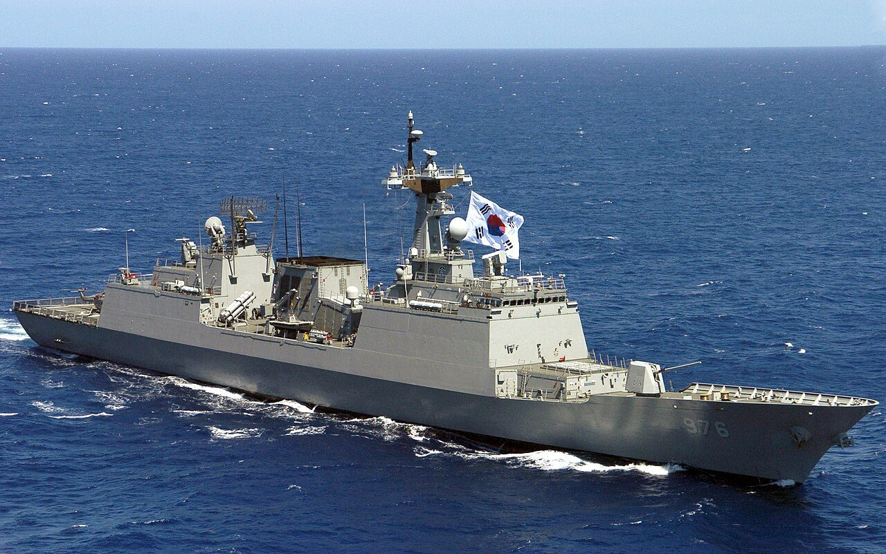
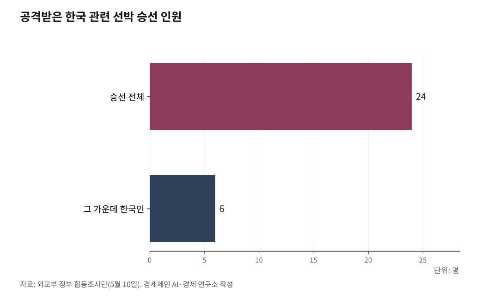

호르무즈 파병을 해서는 안 되는 열 가지 이유
공개 협박은 파병 요청이 아니다, 우리가 응할 의무도 없다
원유 70%가 지나는 길목, 우리 배는 이미 한 번 맞았다
군사력 세계 5위 비핵국가가 남의 침략전쟁에 설 까닭이 없다
AI경세제민=김갑봉 기자 | 청와대가 9월 4일 호르무즈 해협 파병을 두고 "정해진 것은 없지만 계속 검토하고 있다"고 했다. "한반도 대비 태세에 큰 손상이 있지 않은 범위에서는 운신할 수 있다"고도 했다. 해상초계기 P-8A와 1만1000톤급 군수지원함 소양함이 거론된다. 국방부가 올해 초 만든 기여안 네 단계 가운데 마지막인 군 자산 지원이다.

정부는 얼마 전까지 해협이 안정되고 장병 안전이 보장된 뒤에야 파병할 수 있다는 입장이었다. 그 입장이 8월 들어 미국 압박이 거세지자 흔들렸다. 가서는 안 된다. 열 가지를 든다.
요청이 아니라 협박이다
트럼프 대통령은 3월 14일 트루스소셜에 중국과 프랑스와 일본과 한국과 영국을 지목해 군함을 보내라고 했다. 사흘 뒤 유럽이 잇달아 거부하자 "매우 어리석은 실수"라고 몰아붙였다. 8월 30일 폭스뉴스에서는 "모두 노 생큐라고 했다"며 "기억하겠다"고 했다. 8월 17일에는 이재명 대통령이 이란 비핵화 참여 제안을 거절했다는 통화 내용까지 스스로 공개했다.
파병 요청은 비공개로 하는 것이 상례다. 파병국이 주권으로 정하게 두는 배려다. 2003년 이라크 때도 미국 요청은 공개되지 않았다. 이번은 그 격식을 갖춘 요청이 아니다. 완력에 응하면 다음 완력을 부른다.

헌법이 침략전쟁을 부인한다
헌법 제5조 제1항은 대한민국이 국제평화 유지에 노력하고 침략적 전쟁을 부인한다고 적었다. 유엔헌장 제2조 4항은 무력 사용과 위협을 금하고, 제51조가 자위권과 안전보장이사회 결의만 예외로 둔다. 이 전쟁에는 안보리 결의가 없다.
이란이 우리를 친 적이 없다
우리가 나설 자위권 사유가 없다. 이란은 1970년대 건설 진출부터 오래 거래해 온 상대다. 테헤란에 서울로가 있고 서울에 테헤란로가 있다. 두 도시가 이름을 바꿔 단 것이 1977년이다. 그 나라와 총부리를 맞대는 일을 남의 요구로 시작할 수는 없다.
약속을 깬 쪽은 미국이다
2015년 포괄적 공동행동계획을 미국이 2018년 5월 8일 일방으로 깼다. 미국이 빠진 뒤 처음 나온 국제원자력기구 보고서도 이란이 합의를 지키고 있다고 확인했다. 이란이 어겨서가 아니라 미국 정권이 바뀌어 뒤집은 것이다. 지난 5월 호르무즈 개방과 60일 휴전을 담은 양해각서에 합의했다가 7월에 깨졌다. 약속을 깬 쪽이 지금 무력을 쓰고, 지킨 쪽이 표적이 됐다. 그 무력에 우리가 손을 보태는 그림이다.
민간인 피해가 이미 크다
이 전쟁은 2월 28일 미국과 이스라엘이 이란을 때리면서 시작됐다. 그날 미군 토마호크 미사일이 미나브의 초등학교를 쳐 어린이와 교사 등 최소 175명이 숨졌다. 7월에는 케슘섬 주택이 2000파운드급 폭탄을 맞아 민간인 3명이 숨졌다.
9월 1일에는 호르모즈간주 쿠헤스타크에서 결혼식이 열리던 집이 피격됐다. 여성 3명과 어린이 2명 등 최소 5명이 죽고 67명이 다쳤다. 뉴욕타임스는 현장 잔해가 미군 합동원거리공격무기 부품과 일치한다고 분석했다. 밴스 부통령은 "미군이 전투에서 민간인을 표적으로 삼는 일은 절대 없다"며 조사 중이라고 했다.
호르모즈간주는 호르무즈 해협을 낀 땅이다. 우리 군함을 보내겠다는 그 바다 옆에서 벌어진 일이다. 이스라엘이 팔레스타인에서 벌이는 일과 이 전쟁을 따로 떼어 보기도 어렵다.
우리 배가 이미 한 번 맞았다
5월 4일 미국이 프로젝트 프리덤 작전을 시작한 그날, 호르무즈 안쪽 아랍에미리트 인근 해역에서 HMM 나무호에 폭발과 화재가 났다. 승선 24명 가운데 한국인이 6명이었고 인명 피해는 없었다.
외교부는 5월 10일 정부 합동조사단 결과를 내놓으며 "미상의 비행체가 HMM 선미를 타격한 것으로 확인됐다"고 했다. 그러면서 "정확한 기종 및 물리적 크기 등을 확인하기에는 제약이 있는 상황"이라고 덧붙였다. 트럼프는 사고 직후 이란이 한국 선박을 쳤다고 주장했고 이란은 무관하다고 했다. 우리 정부 조사는 어느 쪽도 확인해 주지 못했다.
넉 달이 지나도록 그대로다. 우리가 참전하면 그 모호함이 사라진다. 표적이 뚜렷해진다.
우리는 그 길목 없이 못 사는 나라다
한국무역협회 분석을 보면 우리가 들여오는 원유의 70.7%가 중동산이고, 그 대부분이 호르무즈를 지난다. 트럼프는 8월 16일 "한국은 35%를 들여온다"며 나서라고 했다. 실제 의존도는 그보다 훨씬 높다. 우리 사정을 모르는 사람이 우리 목줄을 쥐고 흔드는 셈이다.
길목을 지키러 갔다가 그 길목을 잃는 것이 최악이다. 유조선 한 척이 멈추면 정유와 석유화학과 발전이 함께 멈춘다.
전투는 못 하고 비전투는 고맙지 않다
이란은 기뢰와 무인기로 싸운다. 군수지원함과 해상초계기는 그 위협에 맞서는 장비가 아니다. 미국이 우리에게 바라는 것도 실은 자기들이 모자란 연안 전투와 기뢰 제거다.
그렇다고 외곽 정찰과 보급으로 트럼프가 만족할 리도 없다. 전투 전력은 보낼 수 없고, 비전투 전력은 보내도 소용이 없다. 어느 쪽도 성립하지 않는다.
한 번 응하면 청구서가 이어진다
작게 응하면 "왜 이것뿐이냐"가 온다. 동시에 "한국이 참전했다"는 말이 남는다. 발을 담그게 만드는 수법이다.
주한미군 철수와 한미연합훈련 축소를 지렛대로 쓰지만 그 카드도 성립하지 않는다. 주한미군은 북한보다 중국을 겨냥한 전력이다. 빼면 미국이 손해다. 트럼프는 8월 16일 을지자유의방패 축소를 지시하면서 "어떤 나라에는 4만5000명이 주둔한다"고 했으나 실제 주한미군은 약 2만8500명이다. 협박의 근거부터 틀렸다.
우리 국방은 핵 없이도 선다
글로벌파이어파워 2026년 지수에서 한국은 0.1642점으로 세계 5위다. 3년째 같은 자리이고, 상위 5개국 가운데 핵을 갖지 않은 나라는 한국뿐이다. 북한은 31위로 격차가 26계단이다.
스톡홀름국제평화연구소 집계로 2025년 한국 국방비는 478억 달러로 세계 13위였고, 늘어난 몫은 3축 체계 투자가 이끌었다. 북한 대비는 그 정밀타격 능력으로 감당한다. 남을 겨눠 핵을 가질 까닭도 없고, 남의 핵우산을 볼모 잡혀 남의 전쟁에 설 까닭도 없다.
거절이 고립을 부르지 않는다
미국 요구를 거절한 나라가 우리만이 아니다. 유럽은 3월에 거부했고, 다카이치 일본 총리는 주요 7개국 정상회의에서 관여하지 않겠다고 답한 뒤 백악관에서 자위대 파견을 막는 법 조항을 들어 사실상 거절했다. 미국 옆에 서기를 그토록 바라는 일본이 그렇게 했다. 우리만 응하면 국제사회가 우리를 어떻게 볼지는 뻔하다.
2003년 4월 2일 국회는 이라크 파병 동의안을 찬성 179표 반대 68표 기권 9표로 가결했다. 건설공병 서희부대 566명과 의료 제마부대 100명이 나시리야로 갔다. 이듬해 2월 13일에는 추가파병 동의안이 통과돼 자이툰부대 3000여명이 아르빌로 갔다. 명분이던 대량살상무기는 끝내 나오지 않았다.
노무현 전 대통령은 자서전 『운명이다』에 이렇게 적었다. "이라크 파병은 옳지 않은 선택으로 역사에 기록될 것이다." 그러면서 "대통령으로서 회피할 수 없는 결정을 했다"고 했다. 스물세 해가 지나 남은 것은 그 문장이다.
군 자산을 보내려면 국가안전보장회의와 국무회의를 거쳐 국회 동의를 받아야 한다. 헌법 제60조 제2항이 정한 절차다. 청와대는 "비전투든 전투든 한 명이든 두 명이든 현장에 가면 파병"이라고 했다. 그 말이 맞다. 그러니 국회가 따질 것은 규모가 아니라 명분이다.
청와대가 여론을 떠보려고 검토 사실을 흘린 것이라면 시민사회가 먼저 답할 일이다. 트럼프가 요구하기 때문에 더더욱 응할 수 없다는 답이다. 한 번 굽히면 그 다음은 협상이 아니라 통보가 된다. 파병 동의안이 국회에 오기 전에 답이 나와야 한다. 올라온 뒤에는 늦다. 그때는 이미 우리 이름이 참전국 명단에 올라 있다.
명분이 없다.
※ 이 기사는 AI 프로그램 클로드 오퍼스 5를 활용해 작성했습니다.
참고문헌
공식 발표자료와 공공기록
· 「대한민국헌법」 제5조, 제60조. 국가법령정보센터. https://www.law.go.kr/법령/대한민국헌법
· 「국제연합헌장」 제2조, 제51조. 유엔. https://www.un.org/en/about-us/un-charter
· 노무현, 『운명이다』(자서전). 인천투데이 재인용.
연구보고서와 논문
· Stockholm International Peace Research Institute, "Trends in World Military Expenditure, 2025", SIPRI Fact Sheet, 2026년 4월. https://www.sipri.org/publications/2026/sipri-fact-sheets/trends-world-military-expenditure-2025
· Arms Control Association, "IAEA Report Confirms Iran's Compliance with the JCPOA", 2018년 6월 8일. https://www.armscontrol.org/blog/2018-06-08/iaea-report-confirms-irans-compliance-jcpoa
언론 보도
· 백소희, "한국 참여하랬더니 '노생큐' 라고…점점 세진 트럼프 '파병' 압박", 머니투데이, 2026년 9월 4일. https://www.mt.co.kr/world/2026/09/04/2026090409594354329
· 이동건, "'결혼식장이 잔해로' 이란서 여성 3명·아이 2명 참변…美 조사 착수", 아주경제, 2026년 9월 4일. https://www.ajunews.com/view/20260904083354517
· 민서영, "청와대, 호르무즈 파병 두고 '한반도 대비태세 손상없는 범위서 운신'", 경향신문, 2026년 9월 4일. https://www.khan.co.kr/article/202609041611011
· "호르무즈 해협 HMM 나무호 폭발 화재…선원 24명 전원 무사", 해사경제신문, 2026년 5월 6일. https://www.ihaesa.com/mobile/article.html?no=89607
· 이주원, "정부 'HMM 나무호, 미상 비행체가 타격'…내부 결함 아니었다", 서울신문, 2026년 5월 10일. https://www.seoul.co.kr/news/politics/2026/05/10/20260510500105
· "[랭킹연구소] 한국, GFP 군사력 순위서 3년 연속 세계 5위", 뉴스스페이스, 2026년 1월 28일. https://www.newsspace.kr/news/article.html?no=12197
· 박대윤, "[오늘의 역사] 이라크전쟁 한국군 파병 가결··· 대량살상무기 없었다", 인천투데이, 2025년 4월 2일. https://www.incheontoday.com/news/articleView.html?idxno=300162
사진 출처
· [대표사진] U.S. Navy photo by Mass Communication Specialist 2nd Class, "ROKS Munmu the Great (DDH 976).jpg", 위키미디어 공용, 퍼블릭 도메인, https://commons.wikimedia.org/wiki/File:ROKS_Munmu_the_Great_(DDH_976).jpg
※ 이 기사는 인공지능을 활용해 작성했습니다.
관련기사
저작권자 © AI경세제민 무단전재 및 재배포, AI학습 및 활용 금지